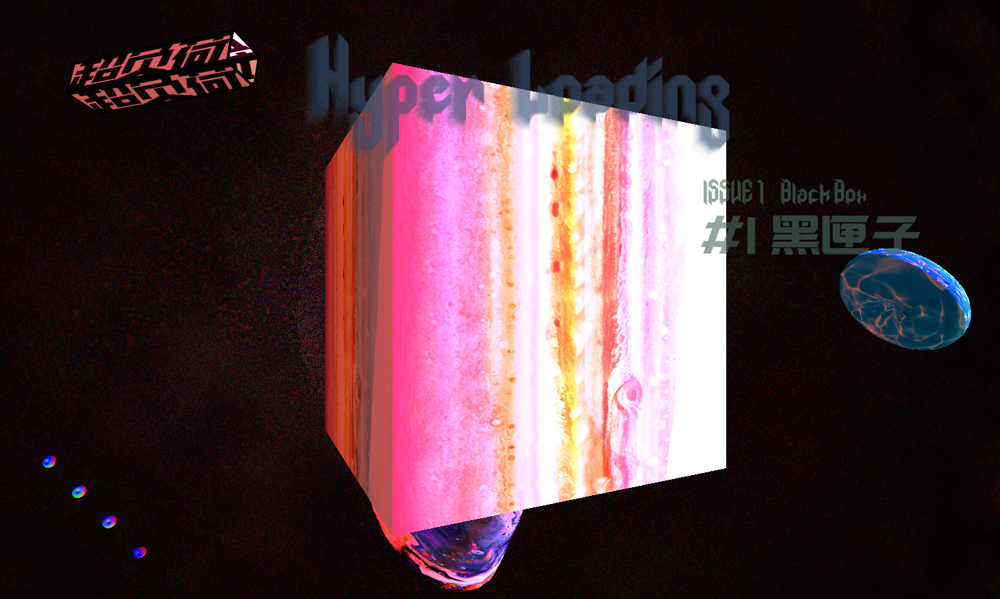
×
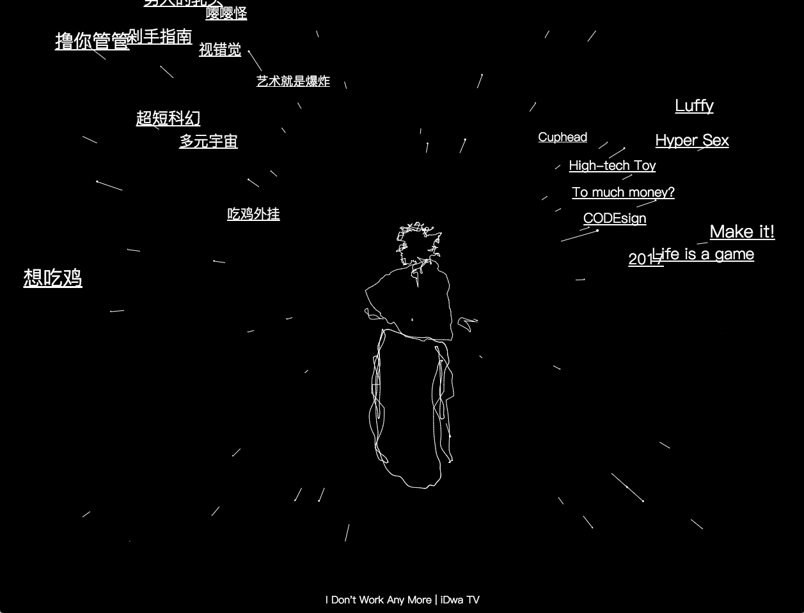
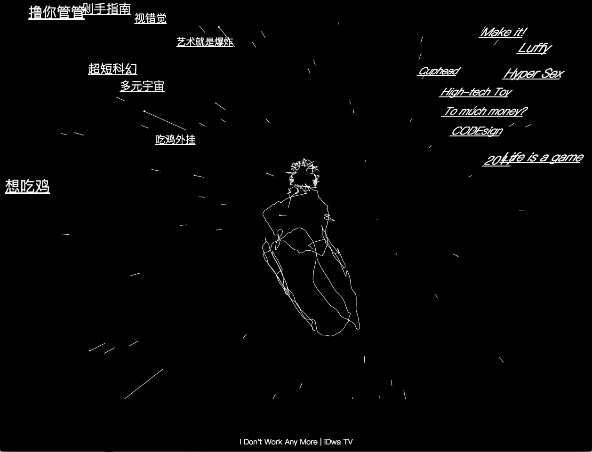
 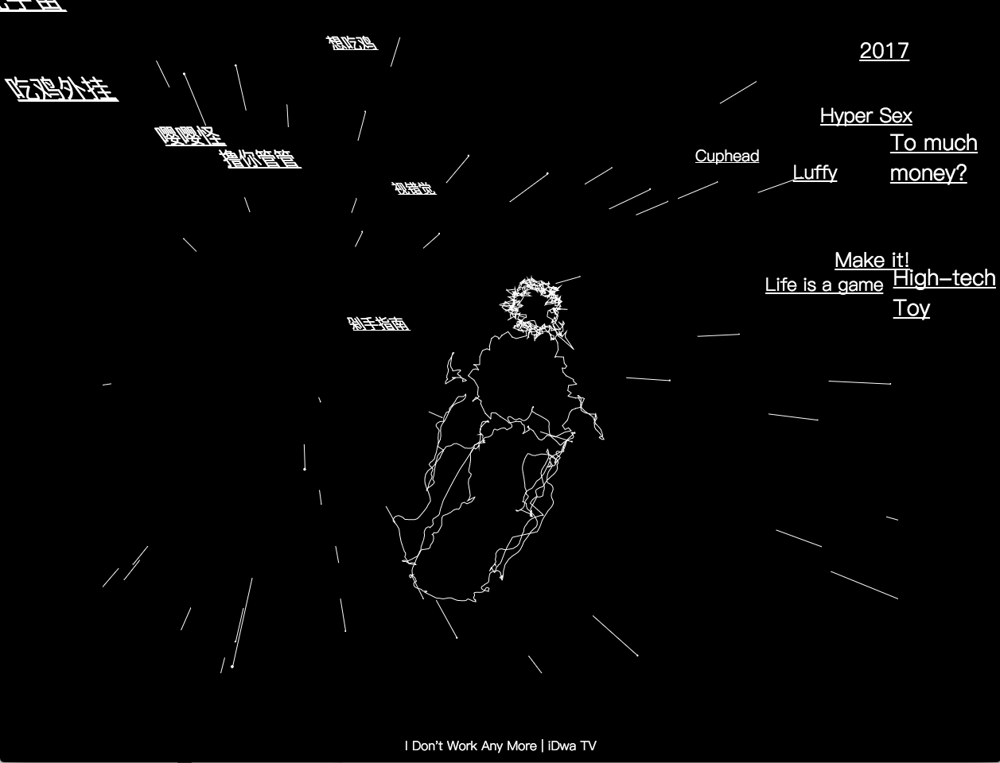
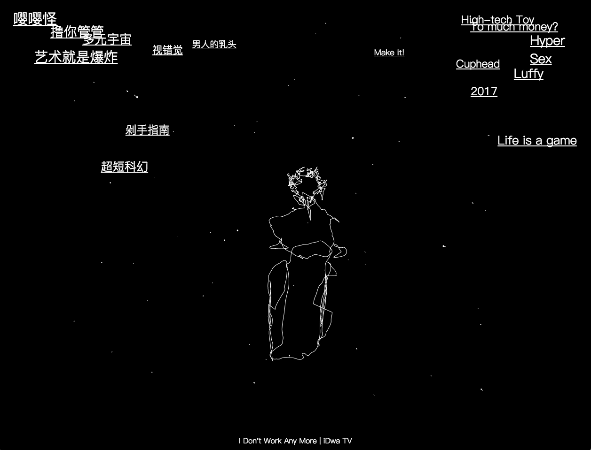
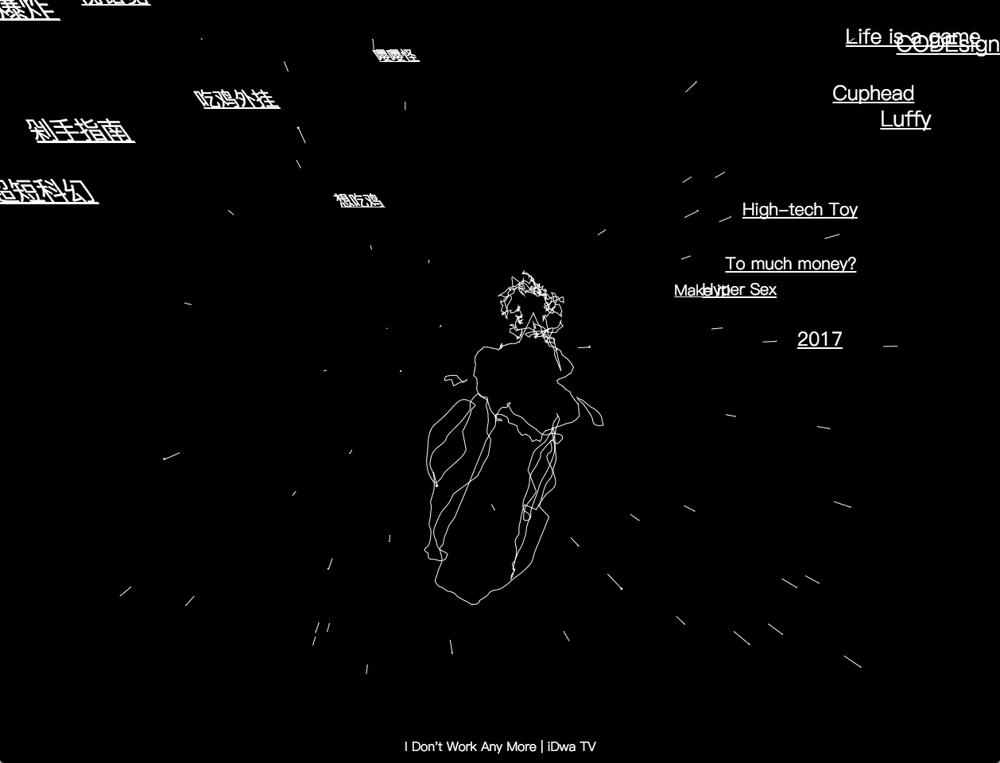
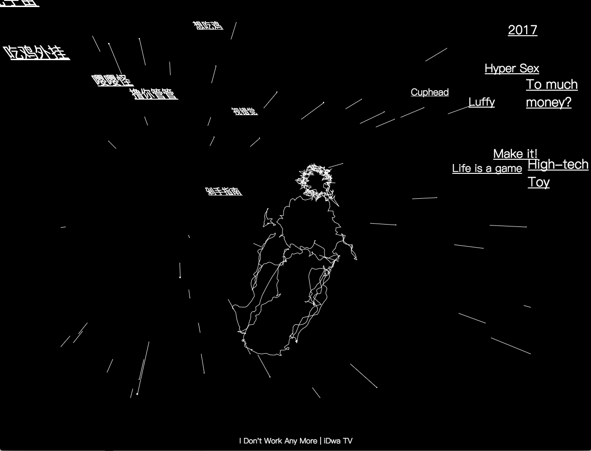
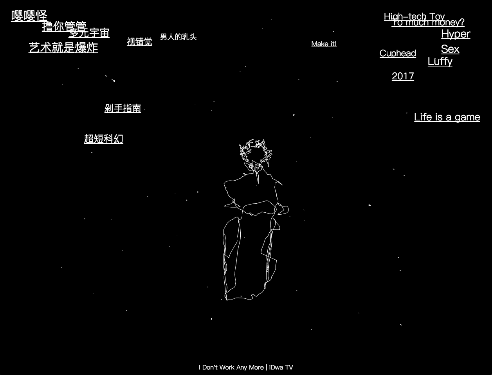
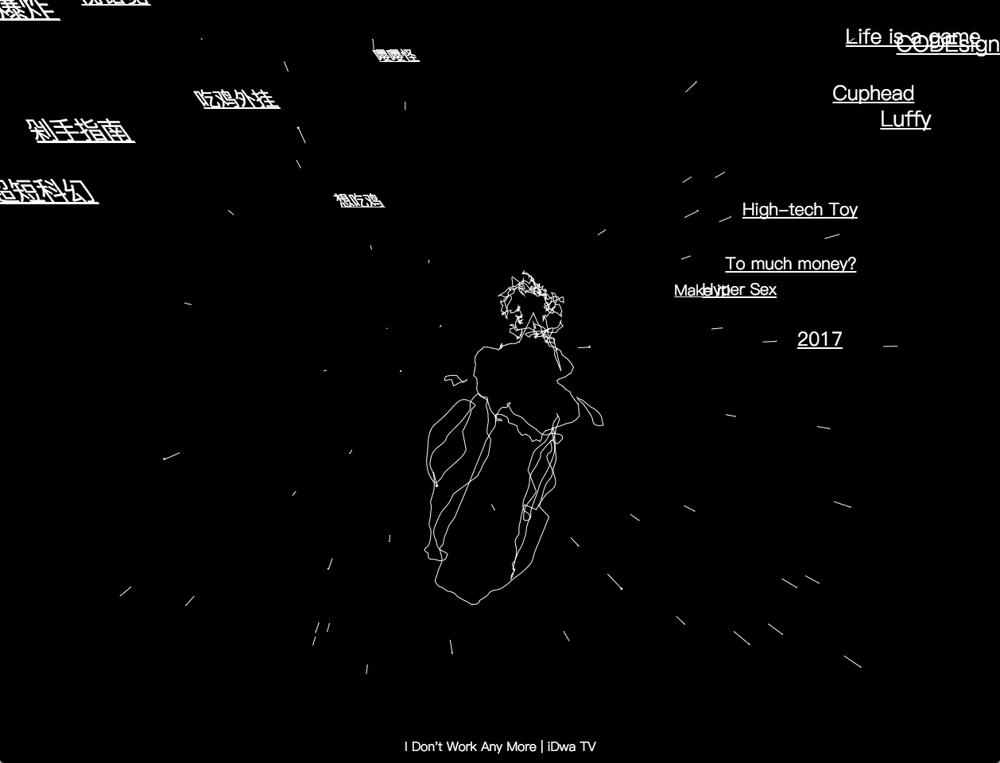
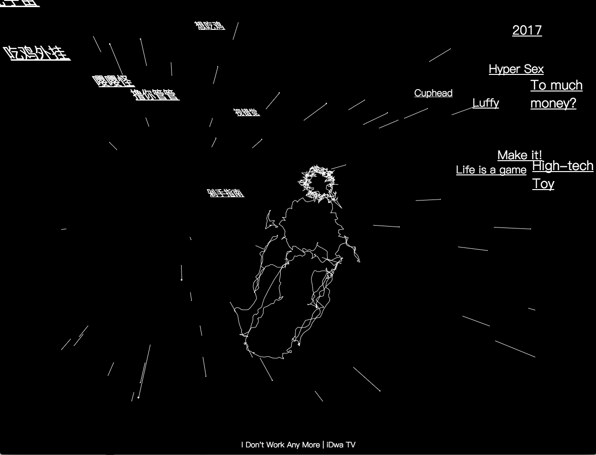
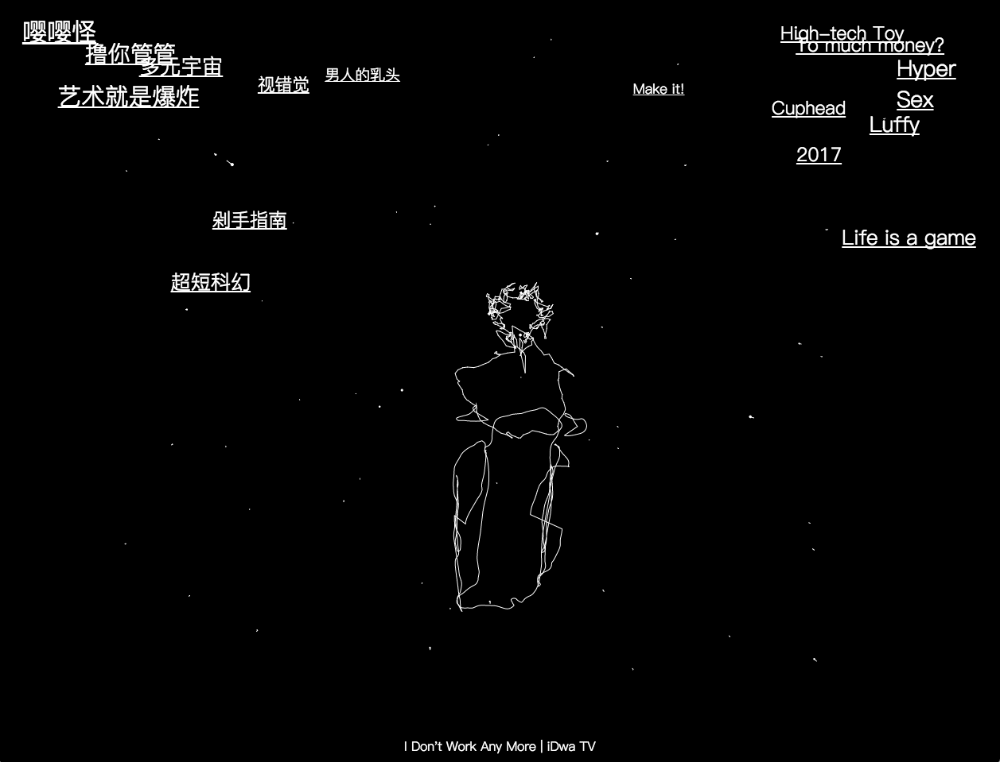
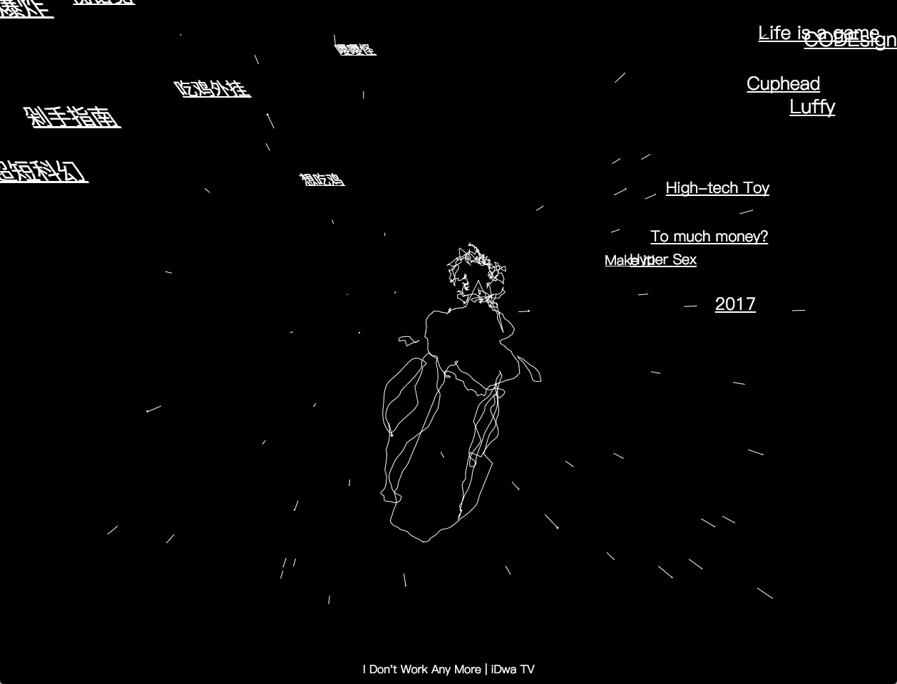
iDwa TV
iDwa TV is an imaginary scene consists with an interactive ambiguous character and some hyperlinks. It can be treated as the actualization of my “id”(refer to Freud). It’s just like peeking my mind through a TV, where my whimsicality bursts out. The links refer to webpages of articles or other stuff which I’m interested in, which makes it also works like an information ferry, shows the funny messages I recommended in an heuristic way.
These messages are changeable, which means that I’ve built a frame. It’s kind of a scheme designed for gathering messages, or it could end up being an endoscope of your mind, by introducing the user’s data of the audience.
iDwa TV